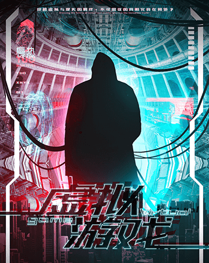
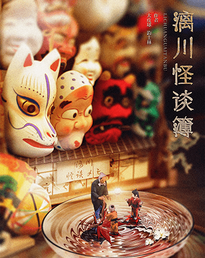
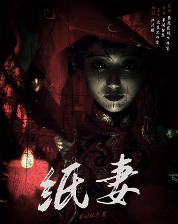
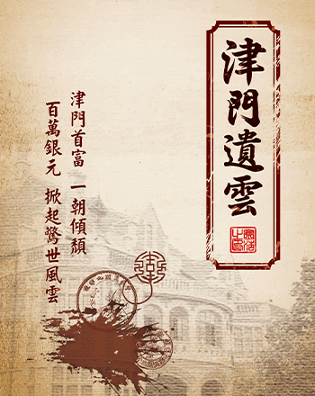
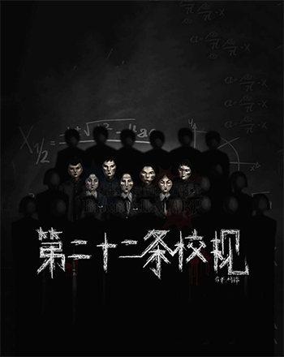
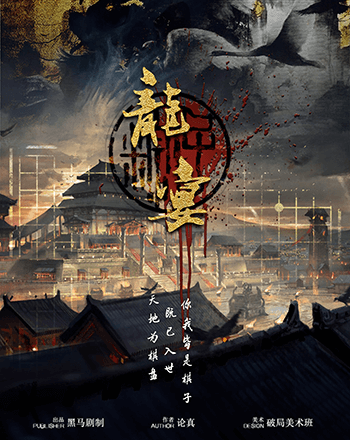

劇本主題類別
- 全部
- 歡樂
- 情感
- 陣營
- 恐怖
- 硬核

奉天1928
情感/普通/5人

年輪
硬核/進階/5人
來電
歡樂/新手/6人
捨離
情感/普通/6人

新屋
恐怖/普通/6人

虛擬遊戲
硬核/進階/6人
古木吟
情感/普通/6人

市井狂人
歡樂/新手/7人

青樓
陣營/普通/7人

漓川怪談簿
硬核/進階/7人

紙妻
恐怖/進階/7人

津門疑雲
陣營/新手/7人

第二十二條校規
恐怖/普通/7人
